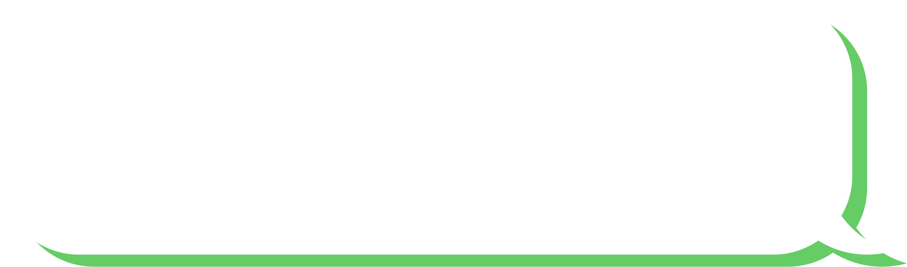

מסקירת נתונים נמצא כי הנך ממתינ\ה 14 דקות
:נשמח לקבל תגובתך המתאימה
האוטובוס לא הגיע
האוטובוס חלף על פני התחנה ולא עצר
האוטובוס היה עמוס לא הצלחתי לעלות
סיבת עיכוב אישית, אינה תלויה במערך התחבורה
אישור